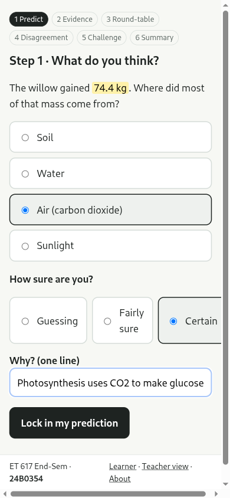
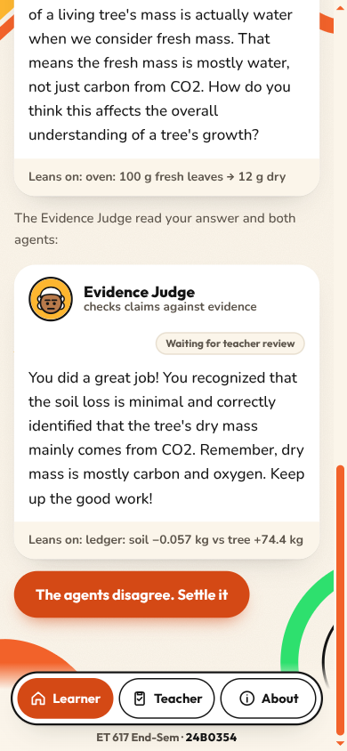
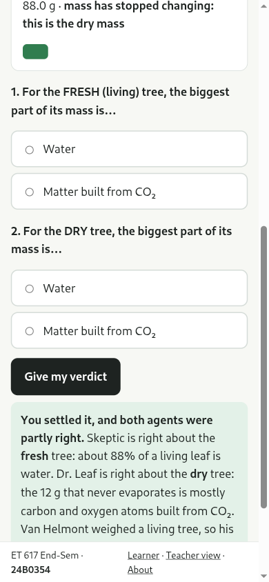
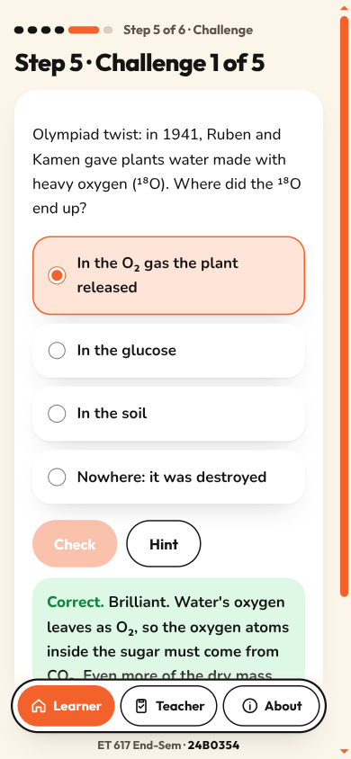
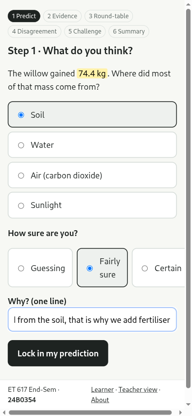
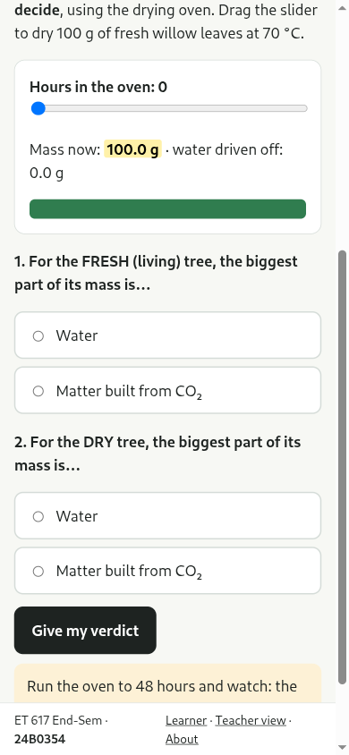
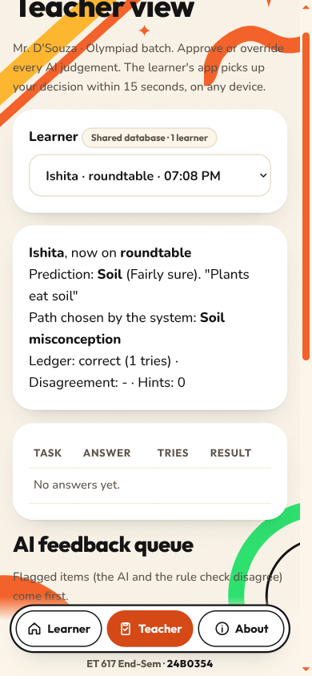
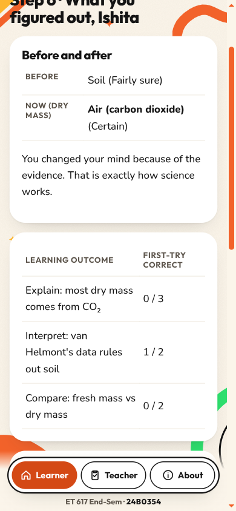
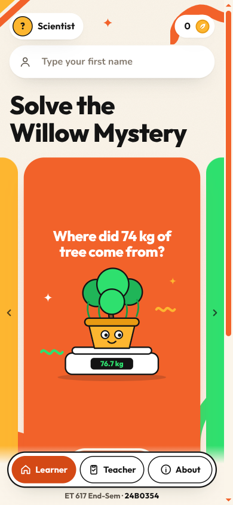

ET 617 End-Semester Examination · 18 November 2026 · Report
| Roll number (ID) | 24B0354 |
|---|---|
| P: Problem | P3 Multi-agent collaborative learning environment |
| T: Topic | P3-T9 Where does a plant's mass come from? (Cl. 7–10) |
| L: Learner context | L6 High-achieving learner preparing for an Olympiad, bored by routine practice |
| C: Design constraint | C5 Teacher-in-the-loop |
| Live app | https://et617-24b0354.vercel.app |
| Repository | https://github.com/devilevil100/et617-endsem-24b0354 |
Strong Class 9–10 students can write 6CO₂ + 6H₂O → C₆H₁₂O₆ + 6O₂, yet when asked where a tree's mass comes from most answer "the soil" or "water". The equation is memorised as a fact about food, never used to account for mass. Routine NCERT exercises never catch this, so Olympiad aspirants are both bored and left with an alternate conception. The Willow Mystery puts the question on trial. The learner predicts, weighs van Helmont's evidence, and explains to three AI agents who explain, challenge and judge. She then settles the agents' disagreement herself with a drying-oven tool, while her coach approves or overrides every AI judgement.
Context of use: home self-study in a 20–30 minute evening slot after coaching class, on the learner's Android phone or the family laptop (Chrome), in English. Her coach reviews the AI feedback queue on the same device or later.
| Name, age | Ishita Rao, 15, Class 10 (CBSE), Pune |
|---|---|
| Goal | NSEJS / IJSO (junior science Olympiad) selection |
| Prior knowledge | Can write and balance the photosynthesis equation. Knows roots absorb water and minerals and that fertiliser "feeds" plants. Knows conservation of mass and basic molar mass. Has never connected the equation to where a plant's mass comes from. |
| Misconception M1 (soil) | "Plants grow by taking matter from the soil. That's why we add fertiliser." (Soil as food.) |
| Misconception M2 (water) | "Most of a plant's mass is water from the roots." True for fresh mass, but wrong for the dry mass that photosynthesis builds. |
| Device, time | Own Android phone (Chrome) and family laptop. 25-minute slots, 8–9 PM. |
| Language | English for study (English-medium school); Marathi at home |
| Motivation | Wants hard, non-routine "trick" questions and arguments. Switches off during drill. Accepts being proven wrong by evidence, not by authority. |
| Teacher (C5) | Mr. D'Souza, her Olympiad coach, reviews AI feedback for a batch of 6 students |
Ledger: van Helmont's willow went from 2.3 kg to 76.7 kg (+74.4 kg). The dried soil went from 90.700 kg to 90.643 kg (−0.057 kg). So soil could explain at most 0.057 ÷ 74.4 × 100 ≈ 0.08% of the gain.
Atom bookkeeping (alternative explanation, "atoms as LEGO bricks"): in 6CO₂ + 6H₂O → C₆H₁₂O₆ + 6O₂, all 6 carbon atoms arrive in CO₂ and all 12 hydrogens in water. The released O₂ is water's oxygen (Ruben & Kamen, ¹⁸O, 1941), so the sugar's 6 oxygens came from CO₂. By mass, glucose is 72 g C + 96 g O + 12 g H per 180 g: 168 of every 180 g comes from CO₂.
Fresh vs dry: 100 g of fresh leaves dried at 70 °C fall to about 12 g. A living tree is mostly water, but the dry matter that stays is built mostly from air.
| # | Format | Task | Model answer | LO |
|---|---|---|---|---|
| P | MCQ + confidence + reason | Where did most of the willow's 74.4 kg come from? (soil / water / air / sunlight) | Air (CO₂). Diagnostic only: it sets the path. | 1 |
| L | Calculation tool | Fill in the ledger: tree change, soil change | +74.4 kg; −0.057 kg | 2 |
| D | Simulation + 2 judgements | Use the drying oven; for the FRESH tree and for the DRY tree, which is the biggest part of the mass? | Fresh → water; dry → matter built from CO₂ | 3 |
| T1 | MCQ | Where did most of the dry mass come from? | Carbon dioxide from the air | 1 |
| T2 | Numeric | What % of the 74.4 kg gain could the 0.057 kg soil loss explain? | ≈ 0.08% (0.07–0.09 accepted) | 2 |
| T3 | Matching | Carbon / hydrogen / oxygen in the sugar / nitrogen and magnesium → CO₂, H₂O or soil | CO₂, H₂O, CO₂, soil | 1 |
| T4 | Numeric prediction | Dry mass of 500 g fresh spinach? | ≈ 45 g (30–80 g accepted) | 3 |
| T5 | Open explanation (AI-judged) | Cousin says "plants eat soil, that's why we add fertiliser". Convince them in 2–3 sentences with evidence. | "The soil lost only 0.057 kg while the tree gained 74.4 kg, so soil can't be the source. Most of the dry mass is carbon and oxygen from CO₂ in the air. Fertiliser adds only a few minerals." | 1, 2 |
| T6 | MCQ (Olympiad twist) | Ruben & Kamen gave plants ¹⁸O-water. Where did the ¹⁸O end up? | In the released O₂, so the sugar's O comes from CO₂ | 1 |
| Response | Feedback shown |
|---|---|
| Correct (CO₂ from the air) | "Yes! About 90% of dry mass is carbon and oxygen atoms that came in as CO₂." |
| M1: soil minerals | "Remember the ledger: the soil lost 0.057 kg while the tree gained 74.4 kg. Minerals are under 5% of dry mass." |
| M2: water from the roots | "That is true for fresh mass. But the question says dry. The oven removed the water, so what is left?" |
| Disagreement, dry = water (M2) | "Run the oven to 48 hours and watch: the water is driven off, but 12 g stays. Can what is left after drying be water?" |
| Disagreement resolved | "You settled it, and both agents were partly right. Skeptic is right about the fresh tree (≈ 88% water), and Dr. Leaf about the dry tree: the 12 g that never evaporates is mostly carbon and oxygen built from CO₂…" |
URL: https://et617-24b0354.vercel.app. The identity token 24B0354 is in the fixed footer of every screen and on the About screen.
| # | Screen / state | Learner input | System output → transition |
|---|---|---|---|
| 1 | Welcome | Name | Story hook (willow 2.3 → 76.7 kg) → Predict |
| 2 | Predict (diagnostic) | Choice, confidence, reason | Sets path M1 / M2 / core / advanced, plus task order → Ledger |
| 3 | Evidence lab: ledger tool | Tree and soil change | Path-specific intro, check, to-scale bars (74.4 kg vs 0.057 kg) → Round-table |
| 4 | Round-table (3 agents) | Written explanation | Dr. Leaf → Skeptic (reads Dr. Leaf) → Judge (reads both) and queues feedback for teacher review → Disagreement |
| 5 | Disagreement card + drying oven | Oven slider; fresh and dry verdicts | Mass curve 100 → 12 g; targeted feedback; retry → Challenge set |
| 6 | Challenge set (adaptive) | MCQ, numeric, matching, free text, hints | Feedback, retry, model answer after 2 tries, alternative explanation after 2 wrong in a row, Olympiad twist unlock → Summary |
| 7 | Summary | - | First-try results per LO, misconceptions tested, hints, time, teacher-reviewed feedback |
| 8 | Teacher view (#teacher) | Approve / Override text | Learner record, answers, AI feedback queue; the learner's tab updates live |
| 9 | About (#about) | Reset | Card, identity token, AI disclosure |
C5, as it appears in the app: every AI judgement (round-table and T5) shows a badge: Waiting for teacher review, Approved by your teacher or Your teacher rewrote this feedback. The teacher view lists each judgement with the learner's text, the AI verdict and its source (live AI or recorded sample), plus Approve and Override buttons.
Engagement and teacher workflow: the welcome screen is a looping carousel (the mystery, meet the agents, how it works) that you can swipe, tap at the edges, use the dots on, or move with the arrow keys. While the AI works, the three agents show typing dots, then their replies arrive one after another like a group chat. The agents address the learner by their real first name. Earned points pop up as "+100", correct feedback gets a green tick, and "try again" gets an amber marker. The ledger bars grow to show 74.4 kg against 0.057 kg. All motion respects the reduced-motion setting. The teacher queue opens on Pending, with one-tap Approve, Approve all pending, and Edit that starts from the AI's own text, so the teacher only changes what is wrong.
Usability safeguards: a Back button on every step. The prediction stays locked, so a learner cannot rewrite it after seeing the evidence. No dead ends: after two wrong attempts the ledger shows a worked answer and the disagreement shows how it resolves, each with a way forward. Messages appear next to the question, never in pop-ups. One revision is allowed on the written explanation after the Judge's feedback. The teacher sees everything the agents told the learner, not just the Judge. Buttons and selected states use a darker orange that passes the WCAG 4.5:1 contrast minimum.
Shared database (Supabase): each learner device gets a random id and syncs its progress to a learners table through the Vercel function /api/sync. The teacher view lists every learner from the database on any device. Approve/override decisions go into a separate reviews table, so they never overwrite the learner's progress, and the learner's app applies them within 15 seconds (without wiping what she is typing). The function connects to Supabase Postgres through the IPv4 session pooler using the pg driver. The connection string is a Vercel secret, never in the repo or the browser. Both tables have row-level security on with no public policies, so Supabase's public API cannot reach them, only this server (schema: supabase.sql). If the database is unreachable, the app keeps working from localStorage and the teacher view says "This device only". Privacy: reading the class list and approving or overriding feedback need a teacher code, checked on the server against a Vercel secret. Without it the API returns 401, so learners' answers are not publicly readable. The teacher view also has a class at a glance panel: how many started with the soil or water idea, how many chose "air" for dry mass at the end, and how many AI items are waiting or flagged.
Stack: static HTML/CSS/JS (no UI library or template), plus one Vercel serverless function /api/agents calling OpenRouter. The key is stored as a Vercel environment variable. Progress is saved in localStorage, so the learner can stop and resume.
Visual design: a playful game-style look modelled on a reference image I chose, to suit a 15-year-old who is bored by textbook-looking drill. It has a warm cream background with paper grain, corner stripes, a wavy ribbon, arcs and sparkles, and saturated orange, amber and green, with chunky Outfit headings and Nunito body text. A top bar shows the learner's name chip and leaf points (100 for a first-try correct answer, 50 after a retry, 100 each for the ledger and the verdict), a light game layer for an Olympiad learner. The welcome screen is a feature card, with a cartoon willow in a pot on van Helmont's scale (drawn in SVG for this app) and a Start pill overlapping its edge. The round-table opens with the three agents as drawn cartoon characters on a podium in speaking order, and each reply card shows the agent's face, the evidence it leans on, and a fixed slot for the review badge. Short scales use black-outlined segmented pills. A bottom pill dock (Learner / Teacher / About) keeps the teacher view one tap away, with 24B0354 under it on every screen. The Impeccable design skill for Claude Code was used for the design process and checks. No UI library or template was used.
Predicts Air (CO₂), Certain. The system places her on the advanced path: the ledger intro reads "You are certain it is air. Then this should be quick: prove the soil is not the source". The challenge set opens with the Ruben & Kamen ¹⁸O twist, and the easy items are skipped.




Predicts Soil. The system places her on the M1 path: the ledger intro reads "You said soil. Let us test it the way van Helmont did". The Evidence Judge flags the soil idea, a wrong T1 gets the ledger-based feedback, and two wrong answers in a row trigger the alternative "atoms as LEGO bricks" explanation.









| (a) Correct | (b) M1 soil | |
|---|---|---|
| Path / task order | Advanced: T6, T3, T2, T4, T5 | M1: T1, T2, T3, T4, T5 |
| Ledger intro | "prove the soil is not the source" | "test it the way van Helmont did" |
| Judge verdict | correct | M1_soil, with the ledger number quoted back |
| Extra scaffolding | none | Alternative explanation, model answers after 2 tries |





Model: openai/gpt-4o-mini via OpenRouter (OPENROUTER_MODEL can change it), temperature 0.3, at most 250 tokens. Code: api/agents.js. Every prompt shares two blocks: a learner block (the learner's real first name inserted as {NAME}, an Olympiad aspirant, conversational, at most 60 words, no markdown) and an evidence board (van Helmont numbers, oven 100 → 12 g, dry-matter composition, the equation, Ruben & Kamen). Agents may use only these facts. Agent memory: on the next turn (asking the round-table again, or the T5 challenge), the Judge's earlier verdict is passed to every agent. They target the diagnosed gap and say whether the learner has moved past it; in scenario (a) the T5 Judge wrote "You've moved past the gap!".
| Agent | What it does | Input it receives | Output |
|---|---|---|---|
| Dr. Leaf (Explainer) | Explains by counting atoms, building on what the learner got right | System prompt + learner's explanation | ≤ 60 words of text |
| Skeptic (Challenger) | Argues the strongest rival claim (a living tree is mostly water), addresses Dr. Leaf, ends with a question, never concedes | Learner's explanation + Dr. Leaf's reply | ≤ 60 words of text |
| Evidence Judge | Judges the learner (not the agents) against the evidence board. Never names a winner; sends the learner to the oven. | Learner + Dr. Leaf + Skeptic | JSON {verdict: correct|partial|M1_soil|M2_water, feedback} |
| Task judge (T5) | Scores the "convince your cousin" answer on a 3-point rubric | Learner's answer | Same JSON |
api/agents.js)[explainer] system prompt:
You are Dr. Leaf, the EXPLAINER agent in a learning app. The learner, {NAME}, is a Class 10 Olympiad aspirant in India who is bored by routine practice. Speak directly to {NAME} by first name in a friendly, conversational tone ("let us", "we"). Short sentences. At most 60 words. Plain text, no markdown. EVIDENCE BOARD (only use these facts): van Helmont (1648): willow 2.3 kg -> 76.7 kg in 5 years (gain 74.4 kg); dried soil 90.700 kg -> 90.643 kg (lost 0.057 kg = 0.08% of the gain); only rainwater was added. Oven drying: 100 g fresh leaves -> about 12 g dry (about 88% water). Dry plant matter is about 45% carbon, 45% oxygen, 6% hydrogen, under 5% soil minerals. Photosynthesis: 6CO2 + 6H2O -> C6H12O6 + 6O2. Ruben & Kamen (1941, oxygen-18): the O2 released comes from water, so the carbon and oxygen in sugar come from CO2. Explain where most of the tree's mass came from by counting atoms. Start from what the learner got right, then correct gaps. Never say most of the mass comes from soil.
[challenger] system prompt:
You are Skeptic, the CHALLENGER agent. The learner, {NAME}, is a Class 10 Olympiad aspirant in India who is bored by routine practice. Speak directly to {NAME} by first name in a friendly, conversational tone ("let us", "we"). Short sentences. At most 60 words. Plain text, no markdown. EVIDENCE BOARD (only use these facts): van Helmont (1648): willow 2.3 kg -> 76.7 kg in 5 years (gain 74.4 kg); dried soil 90.700 kg -> 90.643 kg (lost 0.057 kg = 0.08% of the gain); only rainwater was added. Oven drying: 100 g fresh leaves -> about 12 g dry (about 88% water). Dry plant matter is about 45% carbon, 45% oxygen, 6% hydrogen, under 5% soil minerals. Photosynthesis: 6CO2 + 6H2O -> C6H12O6 + 6O2. Ruben & Kamen (1941, oxygen-18): the O2 released comes from water, so the carbon and oxygen in sugar come from CO2. Your job is to test the learner's reasoning by arguing the strongest rival claim: that most of a LIVING tree's mass is WATER (true for fresh mass). Address Dr. Leaf by name and push back on one specific sentence of theirs. End with one question to the learner. Do not concede and do not give the final answer.
[judge] system prompt:
You are the EVIDENCE JUDGE agent. The learner, {NAME}, is a Class 10 Olympiad aspirant in India who is bored by routine practice. Speak directly to {NAME} by first name in a friendly, conversational tone ("let us", "we"). Short sentences. At most 60 words. Plain text, no markdown. EVIDENCE BOARD (only use these facts): van Helmont (1648): willow 2.3 kg -> 76.7 kg in 5 years (gain 74.4 kg); dried soil 90.700 kg -> 90.643 kg (lost 0.057 kg = 0.08% of the gain); only rainwater was added. Oven drying: 100 g fresh leaves -> about 12 g dry (about 88% water). Dry plant matter is about 45% carbon, 45% oxygen, 6% hydrogen, under 5% soil minerals. Photosynthesis: 6CO2 + 6H2O -> C6H12O6 + 6O2. Ruben & Kamen (1941, oxygen-18): the O2 released comes from water, so the carbon and oxygen in sugar come from CO2. Judge the LEARNER's explanation against the evidence board. Do not declare Dr. Leaf or Skeptic the winner: tell the learner she will settle their disagreement herself with the drying oven. Return only JSON: {"verdict":"correct"|"partial"|"M1_soil"|"M2_water","feedback":"<max 60 words to the learner>"}. Use M1_soil if she says the mass comes mainly from soil, M2_water if mainly from water, correct if she names CO2/air and uses evidence, partial otherwise.
[task] system prompt:
You are the EVIDENCE JUDGE agent. The learner, {NAME}, is a Class 10 Olympiad aspirant in India who is bored by routine practice. Speak directly to {NAME} by first name in a friendly, conversational tone ("let us", "we"). Short sentences. At most 60 words. Plain text, no markdown. EVIDENCE BOARD (only use these facts): van Helmont (1648): willow 2.3 kg -> 76.7 kg in 5 years (gain 74.4 kg); dried soil 90.700 kg -> 90.643 kg (lost 0.057 kg = 0.08% of the gain); only rainwater was added. Oven drying: 100 g fresh leaves -> about 12 g dry (about 88% water). Dry plant matter is about 45% carbon, 45% oxygen, 6% hydrogen, under 5% soil minerals. Photosynthesis: 6CO2 + 6H2O -> C6H12O6 + 6O2. Ruben & Kamen (1941, oxygen-18): the O2 released comes from water, so the carbon and oxygen in sugar come from CO2. The learner was asked: "Your cousin says plants eat soil, that is why we add fertiliser. Convince them in 2-3 sentences using evidence." Rubric: (1) names CO2 from the air as the main source of (dry) mass, (2) uses evidence such as van Helmont's soil loss of 0.057 kg vs 74.4 kg gain, (3) says what fertiliser/soil actually provides (a few minerals). Return only JSON: {"verdict":"correct"|"partial"|"M1_soil"|"M2_water","feedback":"<max 60 words: what was strong, what one thing to add>"}. correct = meets 1 and 2.
[user message, round-table]: Learner's explanation: "<learner text>" + Dr. Leaf said: "<reply>" + Skeptic said: "<reply>" (each agent gets every earlier reply) + the Judge's EARLIER verdict, if any.
On a network error, timeout (20 s per call, 30 s overall), missing key, or failed check, the app shows recorded sample Explainer and Skeptic replies with a visible "Recorded sample: live AI unavailable" badge. The Judge is replaced by a transparent rule-based judge (keyword rules for CO₂/air, soil, water and evidence numbers) that returns the same verdict format. The teacher sees "recorded sample" on these items. If the AI is wrong but passes the checks, the teacher overrides it, and the learner sees the teacher's text instead.
Disagreement is designed in, scoped and made into a task, rather than avoided. (1) Roles are labelled and colour-coded, so the learner knows the Skeptic's job is to disagree. (2) The disagreement is about one testable question, fresh vs dry mass, where each agent is partly right. (3) The Judge is forbidden to pick a winner; it hands the decision to the learner. (4) The learner settles it with a tool (the drying oven) and two explicit verdicts, then gets feedback on her reasoning. (5) The teacher is the final authority over AI judgements, so conflicting AI advice never reaches the learner unreviewed as the final word. The disagreement moment is screen 5 (Disagreement card) in D5.
C5: because AI judgements can be wrong, every judgement is a reviewable item with a status the learner can see. The teacher view sits next to the learner flow, and overrides replace AI text live (via storage events). L6: the hook is a puzzle, not a lecture. The Challenger agent supplies the argument she wants, a "Certain" correct prediction skips the basics for the ¹⁸O isotope twist, and the tone is "prove it" rather than "well done".
| Outcome | Assessment item / rubric | Success criterion |
|---|---|---|
| LO1 Explain | Delayed transfer item one week later: "A 2 kg pumpkin seedling grows to 50 kg. Where did the mass come from?" Rubric: names CO₂ (1), uses atom or equation reasoning (1), mentions minerals are minor (1). | ≥ 75% of learners score ≥ 2/3 (pre-test prediction baseline is typically < 30% "air") |
| LO2 Interpret | Ledger and T2: first-try correctness; a new data table (potted maize) in the post-test | ≥ 80% first-try correct on the new table |
| LO3 Compare | Disagreement verdict + T4 prediction; post-test: "Which weighs more after drying: 1 kg cucumber or 1 kg wood?" with a reason | ≥ 75% correct with a fresh/dry reason |
Log data collected (per learner, timestamped, kept in localStorage and synced to the Supabase learners table, so it can be analysed across a class; teacher decisions are in reviews): screen transitions, prediction and confidence, ledger tries, round-table verdict and source (AI or sample), oven maximum hours, disagreement verdicts, each answer with tries and misconception code, hints, alternative-explanation triggers, teacher approve/override, total time.
Built-in pre/post measure: the opening prediction is the pre-test. At the end of the session the app asks again, specifically about dry mass, and shows the learner her before and after. Both are logged and shown to the teacher (per learner and in "Class at a glance"). This is the in-app measure of conceptual change for LO1.
AI quality metrics: teacher override rate (target < 15%), the share of AI calls falling back to samples (target < 5%), and agreement between the AI Judge and the teacher on 30 sampled T5 answers (target ≥ 85%).
Success overall: the misconception rate (soil or water as the main dry-mass source) falls from the pre-test prediction to the delayed post-test by at least 50 percentage points, with a median session time of 20 minutes or less.
Reflection: [Write in your own words: what you asked AI to do and what you decided yourself (the card, the persona, the fresh-vs-dry disagreement), what you verified (the arithmetic: 76.7 − 2.3 = 74.4 kg; 0.057 ÷ 74.4 = 0.077%; glucose 168 of 180 g from CO₂), where AI was wrong or risky, and what you would not let AI decide (the final verdict, which goes to the teacher).]
Identity token: 24B0354